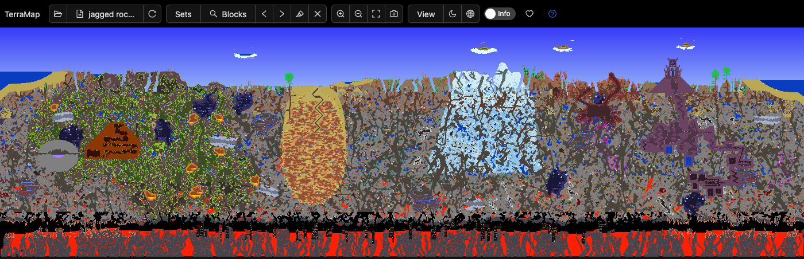

TerraMap
TerraMapFree · Open source · Terraria v1.4.5
Explore your whole Terraria world on one map
TerraMap is an interactive world map viewer that runs in your browser. Open a world file to pan, zoom and find ores, chests and the items in them, Shimmer, Enchanted Swords, the Dungeon, NPCs and more.


Features
Safe and private
Completely read-only, so your world can't be changed or corrupted. Files are read in your browser and never uploaded anywhere.
No spoilers
Open your Terraria folder and pick a character to see only the parts of the world that character has explored.
Find anything
Search for any block, wall or item. Jump between matches with Find Next and Previous, or Highlight All to see every match at once.
Ready-made sets
One click finds chests, locked chests, Life Crystals and Life Fruit, Enchanted Swords, Spider Caves, item-spawning statues and Corruption, Crimson and Hallow blocks.
Chest contents
Hover a chest to preview what's inside, find chests holding a specific item, and open any item on the Terraria Wiki.
In-game coordinates
Locations are shown the way the Compass and Depth Meter show them, like "2300 West, 374 ft Cavern", so you can walk straight there.
World details
See world properties, the spread of Corruption, Crimson and Hallow, and jump to the spawn point, the Dungeon or any NPC.
Wires and images
Show the world's wiring, and save a full-size PNG image of the whole map.
Works everywhere
Any modern browser on Windows, macOS and Linux, with keyboard shortcuts, light and dark themes, and English, Spanish, Portuguese, Russian and Chinese.
Guides
Where are Terraria world files saved?
World and player map file locations on Windows, macOS, Linux and Steam Cloud.
How to find Shimmer
Where the Aether generates, and how to spot its Shimmer pool on the map.
How to find an Enchanted Sword
Find every Enchanted Sword Shrine in your world in a few clicks.
How to find Life Crystals
Find all 15 Life Crystals you need for 400 life.
How to find Shadow Orbs and Crimson Hearts
Early weapons, and how to summon your world's first evil boss.
How to find Floating Islands
See every island at once, and what's in their Skyware Chests.